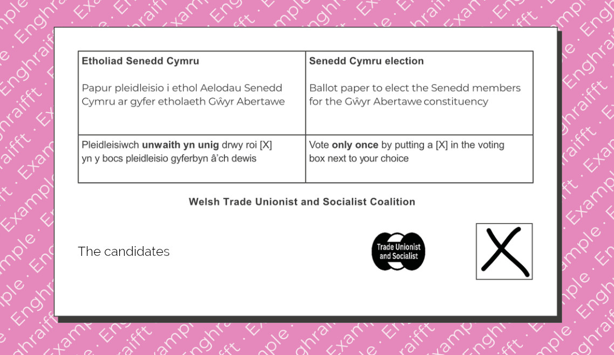

For a Socialist voice in the Senedd,
vote ✘ Welsh Trade Unionist and Socialist
No other party stands for the working-class in Wales like us.
Trade union members, disability and LGBT+ activists, and socialists are standing together as part of TUSC.
We're the ones actually leading in uniting our workplaces and communities to campaign for the resources we need, standing up to Starmer's Labour, and pushing the Welsh Government to do more – while Reform UK have no solutions, and are nowhere to be seen in the struggles that matter.
No other party stands directly on the democratically decided policies of 400,000 trade union members in Wales.
For jobs, homes, rights, and services, not racism and division.
For workers, young people, and the planet, not demonisation and blame.
For democratic public ownership and a socialist economy, not private profit.
Vote ✘ Welsh Trade Unionist and Socialist

Promoted by the Trade Unionist and Socialist Coalition, 17 Colebert House, Colebert Ave., London E1 4JP.